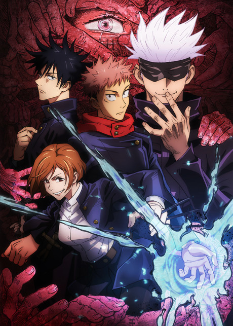
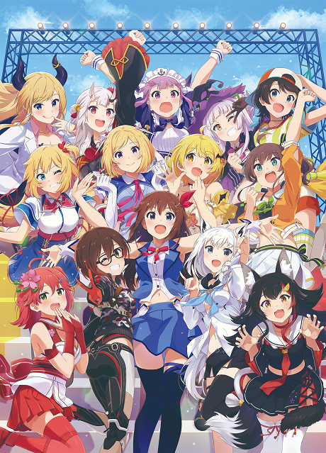
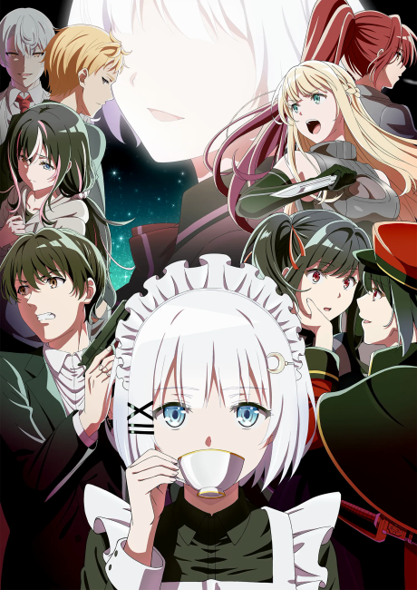
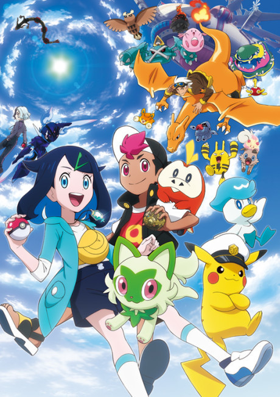
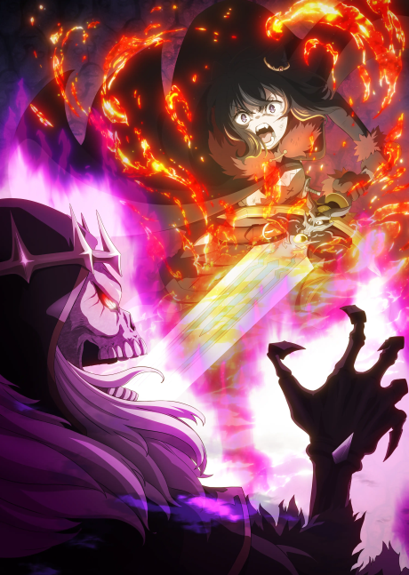
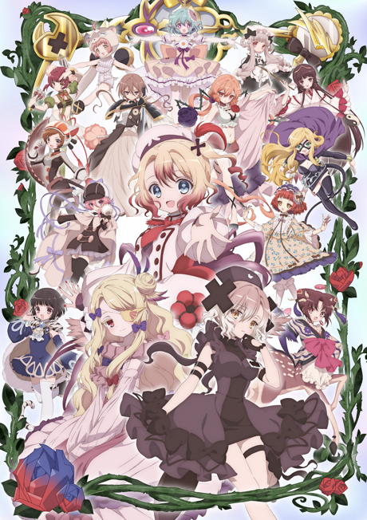
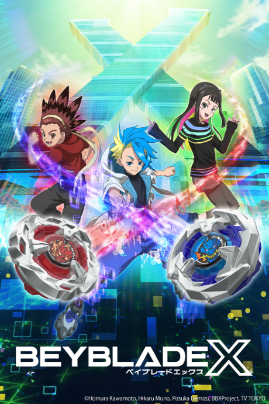
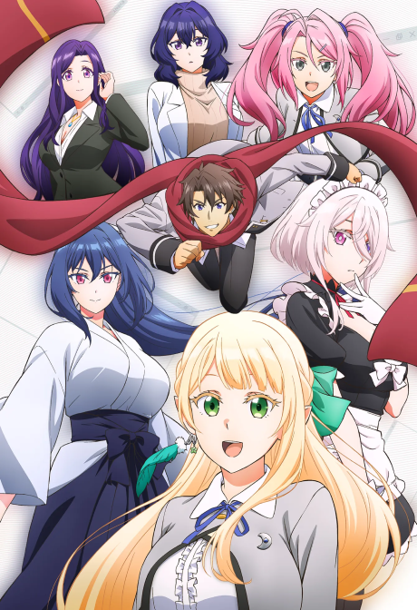
choisis.
clique.
regarde.
01 / 12 AFFICHES EN 2 S → FIGÉ → ZOOM-OUT
01 · hookframe-01 · 0–5s
Premier mouvement : rafale d'affiches du catalogue sur la montée de la musique, qui se fige sur le temps fort ; zoom-out vers la page, puis les trois mots.
rafale → zoom-out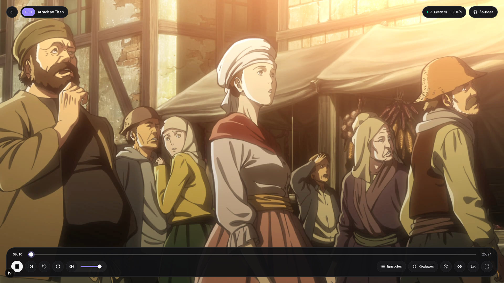
un clic.
gazes s'occupe du reste.
VRAI LECTEUR · CAPTURÉ SUR LA PRÉ-PROD
02 · valueframe-02 · 5–13s
Premier mouvement : clic sur « Regarder » (page d'accueil), la caméra plonge dans l'écran et le vrai lecteur s'ouvre sur l'épisode qui tourne.
dive → cut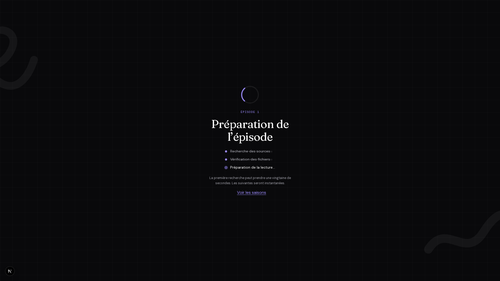
ÉCRAN RÉEL · ÉTAPES COCHÉES SUR LA CADENCE
gazes cherche pour toi.
03 · searchframe-03 · 13–21s
Premier mouvement : poussée sur l'écran réel ; « Recherche des sources », « Vérification des fichiers », « Préparation de la lecture » se cochent un à un.
push-in → cutVOSTFR · 1080p
MULTI · 720p
VF · 1080p ✓ meilleure version
VOSTFR · 480p
la meilleure version d'abord.
04 · best-sourceframe-04 · 21–29s
Premier mouvement : les cartes défilent, se classent ; la meilleure monte en tête et se verrouille. Dernière ligne : « et si ça coince, la suivante prend le relais. »
slide → cut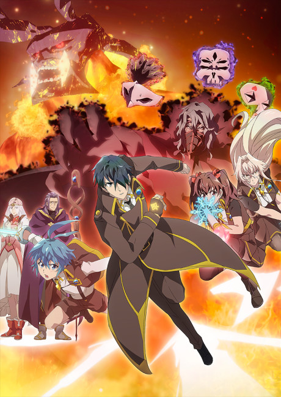
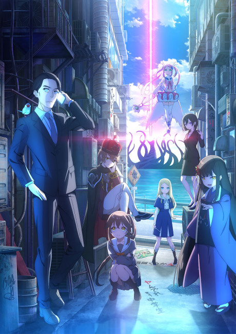
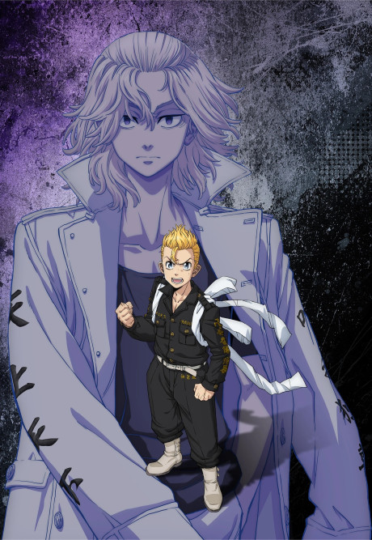
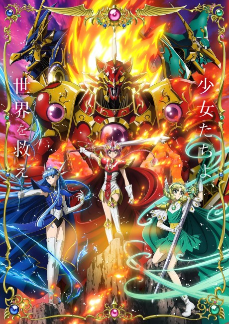
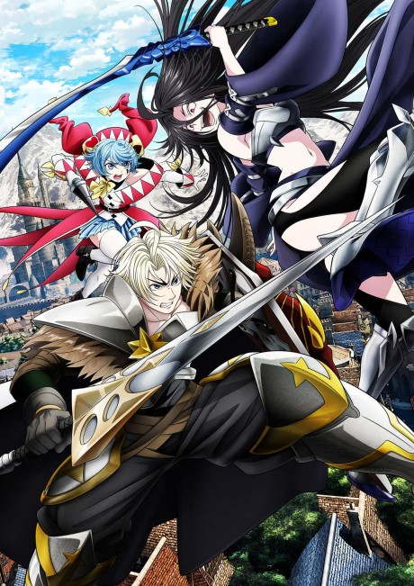
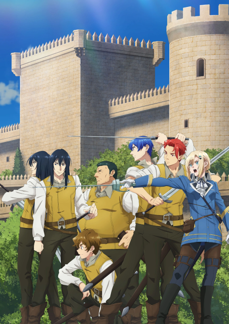
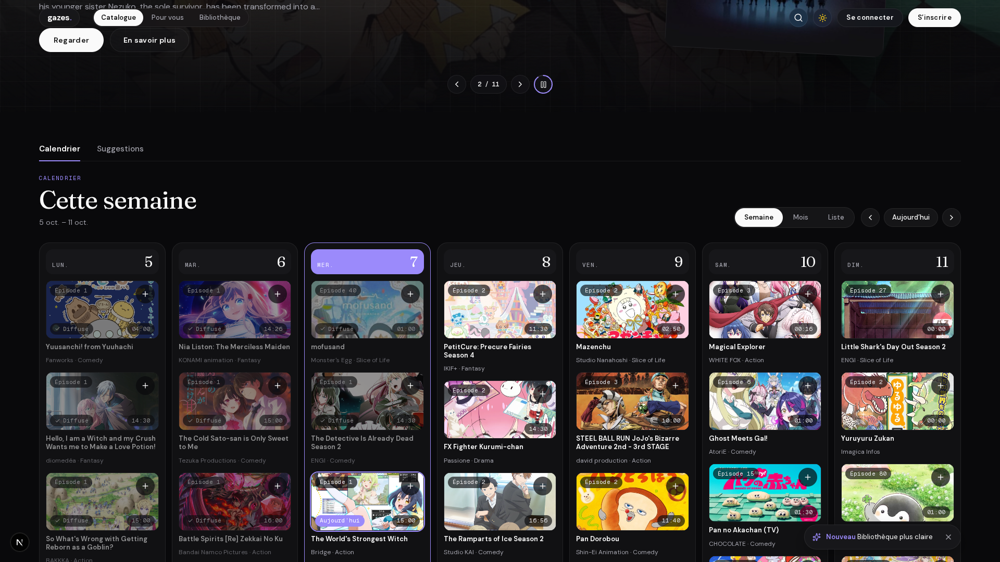
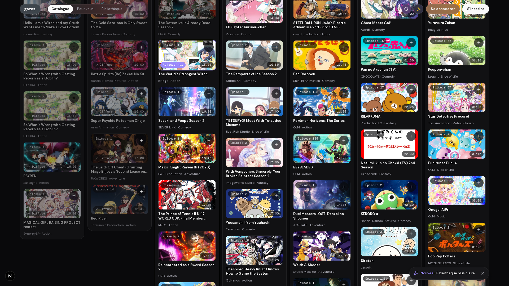
tout l'anime au même endroit.
05 · proofframe-05 · 29–37s
Premier mouvement : mur d'affiches réelles qui défile sur la cadence, puis zoom-out sur les vrais écrans calendrier et catalogue.
zoom-out → cutchoix de la source.
réglages.
reprise partout.
SOURCES · RÉGLAGES · ÉPISODES : BOUTONS RÉELS
06 · comfortframe-06 · 37–42s
Premier mouvement : sur le lecteur en lecture, chaque bouton réel s'allume une fois nommé, puis la carte « Gardez votre progression partout ».
hard cutgazes
ton prochain anime t'attend.
ADRESSE DU SITE · À CONFIRMER
07 · ctaframe-07 · 42–45s
Premier mouvement : tout se vide, le logo se pose au centre ; tenue immobile sur la dernière ligne (frame tenue).
fin · tenuecoutures
01 → 02 coupe sur le riser02 → 03 coupe dure03 → 04 coupe dure04 → 05 coupe dure05 → 06 coupe dure06 → 07 coupe, silence puis logo
Sens unique : poussees et plongees vers l'avant, jamais de retour arriere.
tokens et interdits
#09090b fond#fafafa texte#9b8afb accentDM Sans (titres) · Fraunces (logo) · mono (puces)
Interdits : aucun degrade, aucun nom d'indexeur ni de torrent, aucun chiffre invente, pas de faux UI hors maquette annoncee du lecteur.